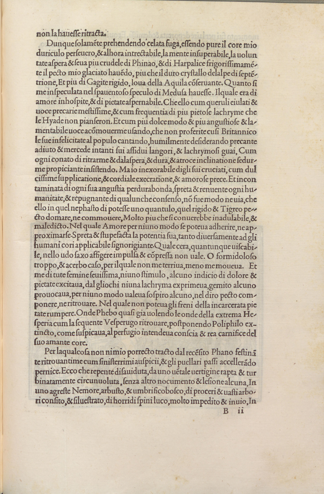

Polia Drags Prostrate Poliphilus from Sanctuary
NARRATIVE · p.389

From the 1499 Aldine first edition (University of Seville copy, via Internet Archive)
Polia drags the unconscious body of Poliphilus away from the temple sanctuary. Interior architectural setting.
In the Narrative
Having found Poliphilus collapsed in the Temple of Diana, Polia desperately pulls him from the sacred precinct.
Source: LLM_ASSISTED · HIGH